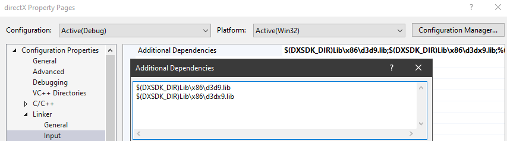

# DirectX9 Setup
Set up DirectX9 development on modern Windows.
## Download DirectX SDK
June 2010 DirectX SDK download:
https://www.microsoft.com/en-gb/download/details.aspx?id=6812Fails if you have Microsoft Visual C++ 2010 installed (but the files are all there).
Uninstall Visual C++ 2010, install DirectX SDK, then reinstall Visual C++ 2010.
https://docs.microsoft.com/en-us/troubleshoot/windows/win32/s1023-error-when-you-install-directx-sdkIt's used by cheat devs to make writing DirectX hooks and drawing DirectX graphics easier.
Good demonstrations of usage:
•
https://www.youtube.com/watch?v=7QDkceeykbI - D3D9 CSGO ESP Tutorial 1 - EndScene Hook
•
https://www.youtube.com/watch?v=YMuh3qvBuXY - Null - Internal hack for ANY GAME
ON WINDOWS 10 YOU POTENTIALLY DON'T NEED THIS.It looks that way anyway. Nor do you need to add the include headers or libraries, they're all in
Windows Kits.
## Configure Visual Studio
### Compile Options
Add the includesC/C++ > Additional Include Directories >
$(DXSDK_DIR)IncludeAdd the libraries for each library you're using for the CORRECT ARCHITECTURE
Linker > Input > Additional Dependencies > Edit >
$(DXSDK_DIR)Lib\x86\d3dx9.lib#### Includes / Libraries
#include <Windows.h>
#include <d3d9.h>
#include <d3dx9.h>
#pragma comment(lib, "d3d9.lib")
#pragma comment(lib, "d3dx9.lib")
## Using DirectX APIs - C vs C++
https://stackoverflow.com/questions/4696079/directx-programming-in-cIn C++ you do this (because DirectX is a COM object / C++ class):
hr = d3d->GetDeviceCaps(D3DADAPTER_DEFAULT, D3DDEVTYPE_HAL, &d3dcaps9);In C you do this:
hr = IDirect3D9_GetDeviceCaps(d3d, D3DADAPTER_DEFAULT, D3DDEVTYPE_HAL, &d3dcaps9);or for devices in C:
hr = IDirect3DDevice9_Clear(pDevice, ?, ?, ?);Drawing// c++
ID3DXLine* p_line = NULL;
D3DXCreateLine(my_d3dDevice, &p_line);
D3DXVECTOR2 vertex_list[2];
vertex_list[0] = D3DXVECTOR2(start_x, start_y);
vertex_list[1] = D3DXVECTOR2(end_x, end_y);
p_line->SetWidth(thickness);
p_line->Draw(vertex_list, 2, colour);
p_line->Release();
// c
ID3DXLine* p_line = NULL;
D3DXCreateLine(my_d3dDevice, &p_line);
D3DXVECTOR2 vertex_list[2];
vertex_list[0] = (D3DXVECTOR2){ start_x, start_y };
vertex_list[1] = (D3DXVECTOR2){ end_x, end_y };
p_line->lpVtbl->SetWidth(p_line, thickness);
p_line->lpVtbl->Draw(p_line, vertex_list, 2, colour);
p_line->lpVtbl->Release(p_line);